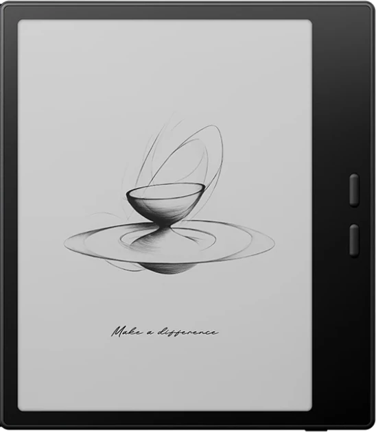

מעבדת השירות, בתוך החנות
נשבר? לא נדלק?מתקנים כאן, בחולון.
מעבדת תיקונים לכל דגמי BOOX, וגם לקינדל, ל-PocketBook ולמכשירים נוספים. בחלקי חילוף מקוריים, ובלי לשלוח אתכם לקבלן משנה או לחנות סלולר.
- 80%מהתיקונים נמשכים 30 עד 60 דקות*
- רמת רכיבתיקון לוח אם, לא רק החלפה
- מקורייםחלקי החילוף לדגמי BOOX
* לפי נתוני המעבדה, כפי שהם מופיעים היום באתר.

מה מתקנים
מהמסך ועד הרכיב הקטן בלוח
אלה התיקונים שהמעבדה עושה היום. לא בטוחים מה התקלה? מתארים אותה בטופס, ומיכאל יבדוק.
החלפת מסך
מסך סדוק, כתמים או קווים שלא נעלמים. מחליפים את המסך, ובדגמי BOOX בחלק מקורי.
החלפת סוללה
המכשיר מתרוקן מהר, נכבה באמצע או לא נטען כמו פעם.
צריבת מערכת הפעלה
המכשיר נתקע במסך הפתיחה, מאתחל את עצמו או מתנהג מוזר אחרי עדכון.
שחזור נתונים
ספרים, פתקים וקבצים שנשארו על מכשיר תקול. מנסים להציל אותם לפני כל דבר אחר.
תיקון לוח אם
כשהתקלה בלוח עצמו, בודקים ומתקנים עד רמת הרכיב.
טרייד-אין
אם התיקון לא משתלם, אפשר להחליף את המכשיר הישן בחדש, במחיר מופחת.
מכשירים שמגיעים למעבדה
- BOOX, כל הדגמים
- Kindle
- PocketBook
- מחשבים
- GPS ו-MIO
- רחפני DJI
איך זה עובד
ארבעה צעדים, ובדרך כלל באותו יום
מתאמים מראש
מתקשרים או שולחים וואטסאפ, וקובעים מתי להביא את המכשיר. מסירה למעבדה בימים א׳ עד ה׳ בין 11:00 ל-19:00, ובשישי בין 11:00 ל-15:00.
בודקים מולכם
מיכאל בודק את המכשיר, מאתר את התקלה ומסביר מה מצא.
מתקנים במקום
התיקון נעשה כאן במעבדה. לפי נתוני המעבדה, 80% מהתיקונים נמשכים 30 עד 60 דקות.
מקבלים הסבר
מקבלים את המכשיר בחזרה, עם הסבר על התקלה ועל הרכיבים שהוחלפו.
התיקון לא משתלם?
אפשר להחליף את המכשיר הישן בחדש, במחיר מופחת. שואלים את מיכאל כבר בבדיקה.
לפני שמגיעים
ספרו לנו מה קרה למכשיר
כמה פרטים עוזרים למיכאל להתכונן: איזה מכשיר, מה קרה, ותמונה אם יש. הוא יחזור אליכם לתאם מתי להביא אותו.
- טלפון למעבדה 050-460-4020
- אילת 36, חולון. איך מגיעים
כשהתקשרתי לחנות בה רכשתי את הספרים לא נתנו לי שום תמיכה ולכן הגעתי לקרן אלקטרוניקה. המוכר סיפק לי את כל המידע שהייתי צריכה ועזר לי להגדיר את שני המכשירים עם הרבה סבלנות והקשבה.
שאלות על המעבדה
לפני שמביאים את המכשיר
כמה זמן לוקח תיקון?
לפי נתוני המעבדה, 80% מהתיקונים נמשכים 30 עד 60 דקות. את הזמן המדויק מיכאל יגיד לכם אחרי הבדיקה.
מתקנים גם קינדל ו-PocketBook?
כן. המעבדה מתקנת את כל דגמי BOOX, וגם קינדל ו-PocketBook, מחשבים, מכשירי GPS ו-MIO ורחפני DJI.
החלקים מקוריים?
בתיקוני BOOX משתמשים בחלקי חילוף מקוריים. התיקון נעשה כאן במעבדה, בלי לשלוח את המכשיר לקבלן משנה או לחנות סלולר.
אפשר פשוט לקפוץ עם המכשיר?
עדיף לתאם בטלפון קודם. מסירה למעבדה בימים א׳ עד ה׳ בין 11:00 ל-19:00, ובשישי בין 11:00 ל-15:00. כך מגיעים לחנות.